Three-point lighting
One lamp in the wrong place makes anybody look like their passport photo. Three lamps in the right places make them look like they belong on the evening news. Same face, same camera. This lesson is about where the lights go.
Start here
What changed?
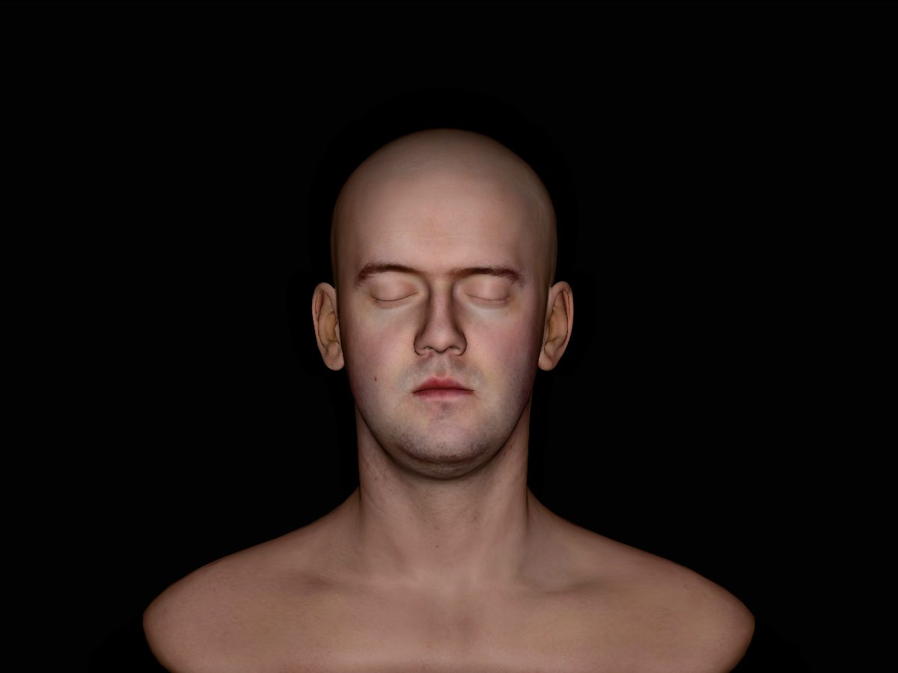
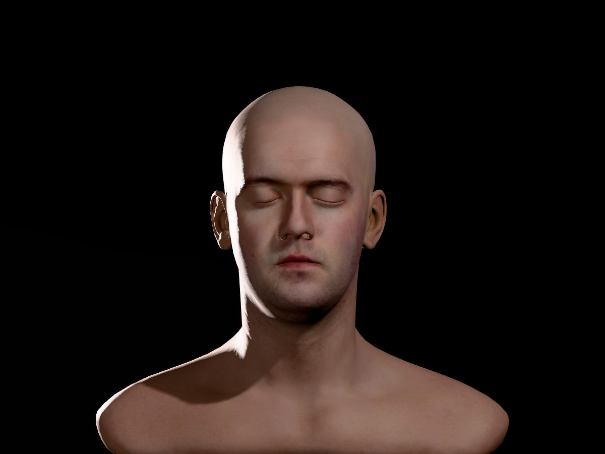
Same face. Same camera. Same settings. What changed in picture B?
Try it
Light it yourself.
This is a 3D scan of a real person’s head, with three lights you can move. The map shows the room from above: his head in the middle, the camera at the bottom, the back wall at the top. Drag a light, or tap the floor to send the selected one there. Pick a light underneath the map to switch it on and off, change its brightness, or raise and lower it.
What you just did
Three lights, three jobs.
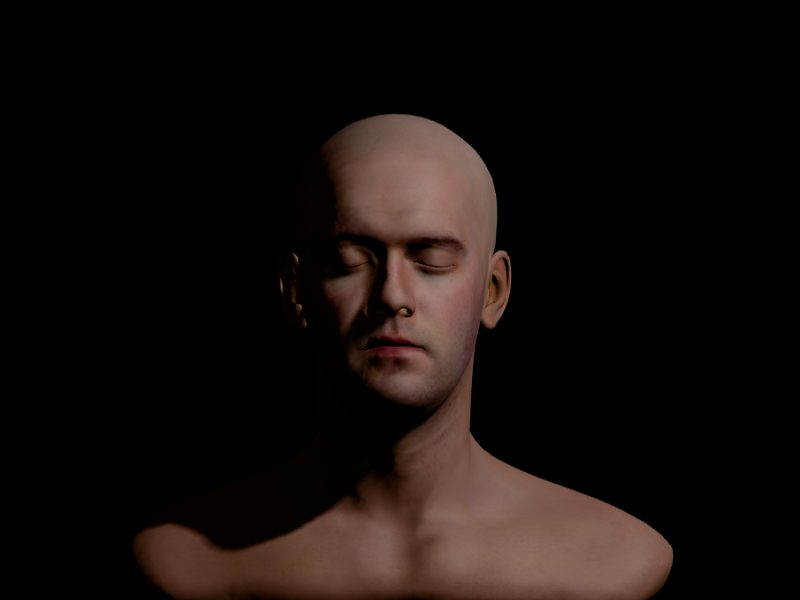
Key
The main light. It makes the shadows, and the shadows make the shape of the face.
Usually 30° to 45° to one side of the camera and a little above eye level, angled down. If you only have one light, it’s your key.
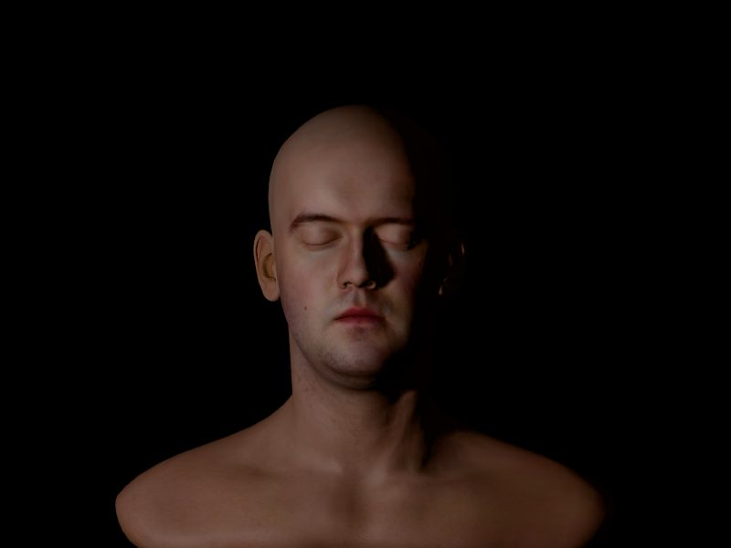
Fill
Fills in the shadows the key made. It goes on the other side of the camera, and it’s dimmer, softer or farther away.
Its job is to decide how dark the shadow side gets. Not to get rid of it.
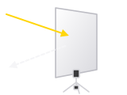
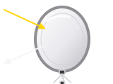
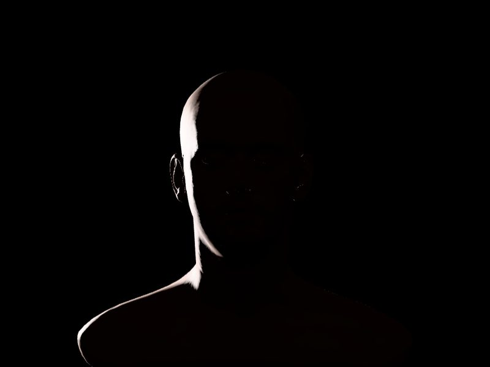
Back
Behind the person, usually high, aimed at the back of the head and shoulders. It draws an edge of light that separates them from the background.
You’ll also hear it called a rim light or a hair light.
Each picture is the 3D head from the demo with only that one light switched on. The colours on the map are only labels. All three lights are plain white. The Amazon links are searches, not recommendations of one brand.
How much fill?
The ratio.
A sitcom is lit bright and even. A crime drama lets half the face fall into the dark. A lot of that difference comes down to one number.
Lighting people call it the key-to-fill ratio. It compares the bright side of the face with the shadow side. 2:1 means the bright side gets twice as much light. The bigger the first number, the darker the shadows. Same head and same key light in all three pictures. Only the fill changes.
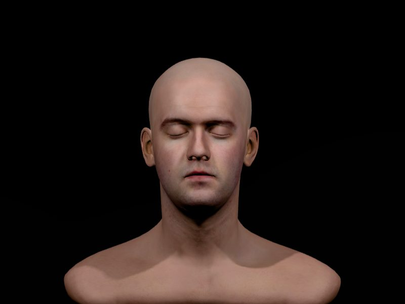
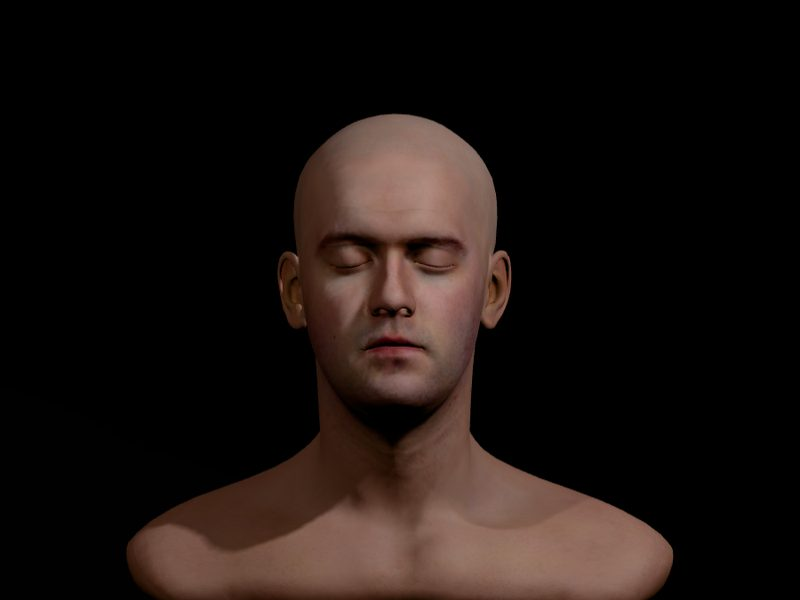
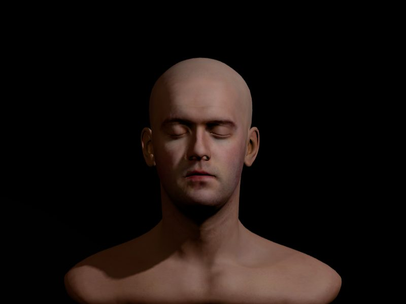
These are starting points, not laws. The way I see it, if it looks good to you, it’s right. If the shadow side bothers you, move the fill. If it doesn’t, leave it alone.
Try it at home
You don’t need a lighting kit.
You need a friend, a chair, a plain wall a few feet behind them, your phone, and three things you probably already own.
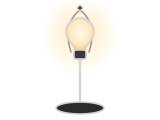
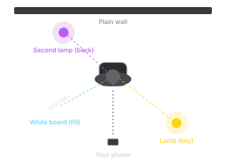
- Turn off the overhead lights. Take one photo with just the ceiling light first, for comparison.
- Put the lamp about 45° to one side and a little above their eyes. Take a photo.
- Hold the white board on the other side, close to their face but just out of frame. Move it closer and farther and watch the shadow side change. Take a photo.
- Put the second lamp behind them, high, on the side across from the key. Take a photo.
- Line up all four. I bet you delete the first one. :)
Lamps get hot. Keep bulbs away from the board and anything else that can scorch.
Five questions
Check yourself.
Up next in Light
Hard and soft light.
Why a bare bulb and a window give the same face completely different shadows. That lesson isn’t built yet. If you’d like to hear when it is, get the weekly email.
The head is Infinite, 3D Head Scan by Lee Perry-Smith, licensed under Creative Commons Attribution 3.0, from the three.js examples. The 3D runs on three.js, stored on this site so nothing loads from anyone else’s server.